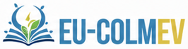

Bitácora de la sesión
EN VIVO
SEGUIDOR EN MOVIMIENTO
CÁM 1—
Cámara libre · W A S D mover · Q/E bajar/subir · arrastra para mirar · Shift rápido · rueda = velocidad · F o Esc salir
Este navegador o equipo no ofreció WebGL, que el simulador necesita para dibujar el banco. Tu avance guardado se conserva.
?q=low a la dirección.about:gpu (Chrome) o en webglreport.com si WebGL está disponible.No hay una guía abierta. Abre el listado para empezar, continuar o consultar una práctica.
Haz clic en un punto de medida (TP) para colocar la punta roja y luego la negra; también puedes elegirlos en las listas.
El multímetro usa la misma carga programable del banco (modos Abierto y Cortocircuito) y devuelve la carga al modo anterior al terminar. La carga es común: mientras mide, ambos módulos están en ese modo.

Laboratorio remoto solar de la UNACH · EU‑COLMEV.
Los atajos se ignoran mientras escribes o usas un botón, control deslizante o campo, y con Ctrl, Alt o Meta pulsados.
Gemelo digital interactivo del banco fotovoltaico de la Facultad de Ciencias en Física y Matemáticas.
Estás en el modo simulador: los datos se calculan con modelos de pvlib para Tuxtla Gutiérrez y las reglas de seguridad son las mismas que tendrá el banco real. Practica aquí antes de reservar tiempo en el laboratorio físico. Elige un rol para comenzar.
EU‑COLMEV · Laboratorios remotos